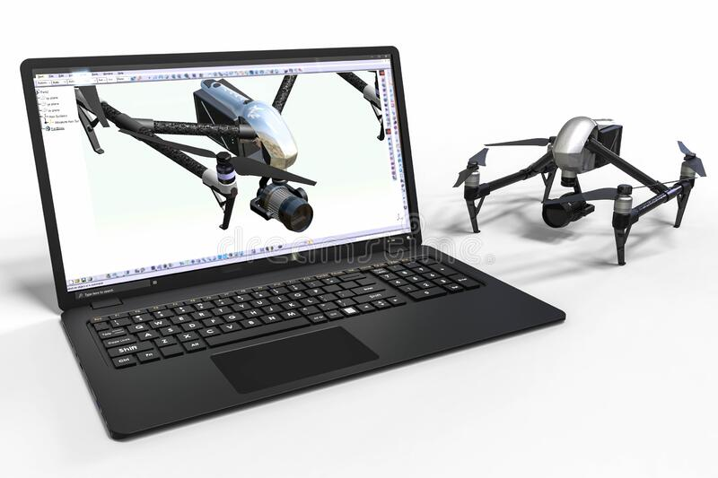
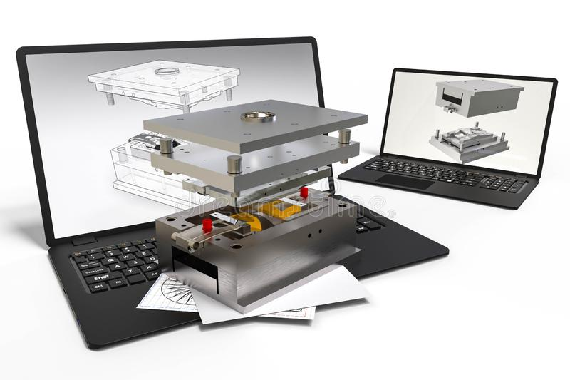
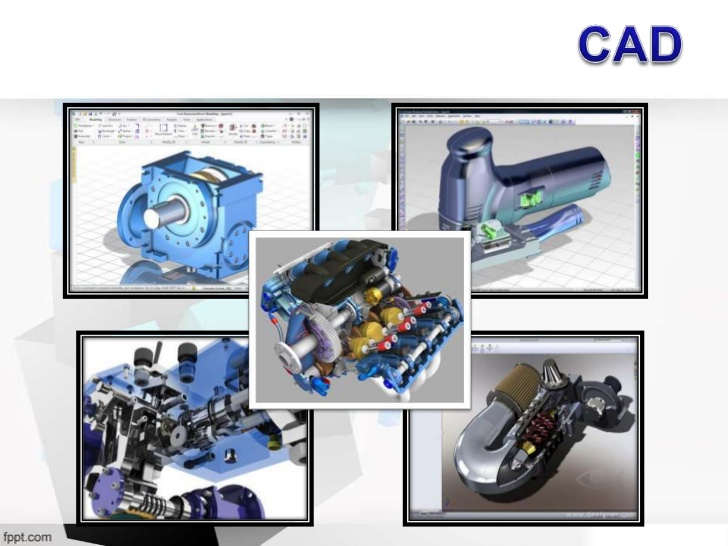
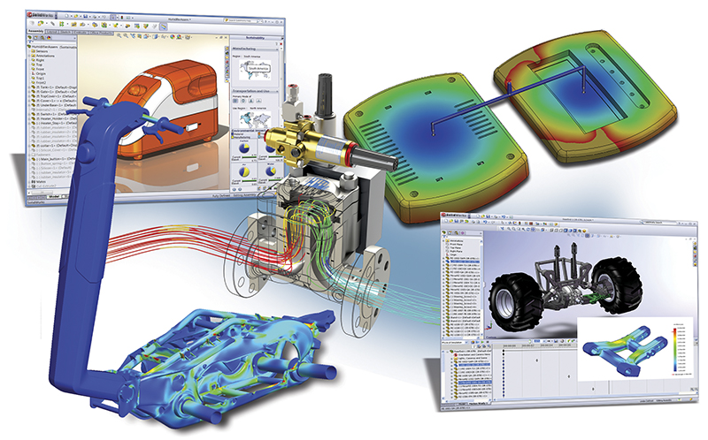

- 
- 
- 
- 
El diseño asistido por computadora conocido como diseño asistido por ordenador en españa, habitualmente
citado como CAD por las siglas de su nombre en inglés computer-aided design es el uso de
ordenadores para ayudar en la ceación. modificación, análisis u optimización de un diseño. El
software CAD se utiliza para aumentar la productividad del diseñador, mejorar la calidad del diseño,
mejorar las comunicaciones a través de la documentación y crear una base de datos para la
fabricación. La salida CAD a menudo se presenta en forma de archivos electrónicos para impresión,
mecanizado u otras operaciones de fabricación. También se puede considerar al CAD como una técnica
de dibujo.
También se puede llegar a encontrar denotado con las siglas CADD (computer-ailed design and drafting), que
significan bosquejo y diseño asistido por
computadora.
Estas herramientas se pueden dividir básicamente en programas de dibujo 2D y de modelado 3D. Las herramientas de dibujo en 2D se basan en
entidades geométricas vectoriales como puntos, líneas,
arcos y polígonos, con las que se puede
operar a través de una interfaz gráfica. Los
modeladores en 3Dañaden superficies y sólidos.
El CAD fue principalmente inventado por un francés, Pierre
Bézier, ingeniero de los Arts et Metiers Paris
Tech. El ingeniero desarrolló los principios fundamentales del CAD con su programa
UNISURF en 1966.
El usuario puede asociar a cada entidad una serie de propiedades como color, capa, estilo de línea,
nombre, definición geométrica, material, etc; que permiten manejar la información de forma lógica.
Son modeladores 3D para obtener una previsualización realista del producto, aunque a menudo se
prefiere exportar los modelos a programas especializados en visualización y animación, como Autodesk Maya, Autodesk Inventor, Rhinoceros 3D, Solidworks,
Bentley MicroStation, Softimage XSI o Cinema 4D y la alternativa libre y gratuita Blender, capaz de modelar, animar y realizar
videojuegos.